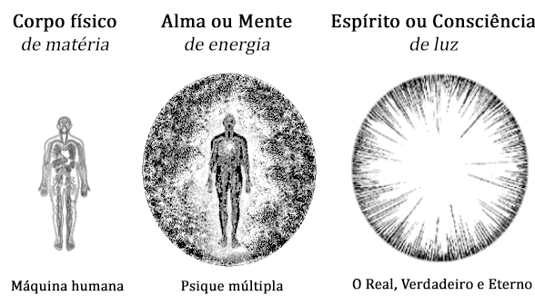
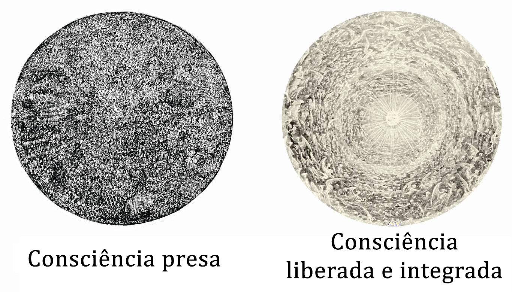

Conferência nº1
O CONHECIMENTO DE SI MESMO E SEUS OBJETIVOS
Conhecer-se a si mesmo é ter logrado a identidade com o seu próprio Ser Divinal, saber-se idêntico a seu próprio Espírito, experimentar diretamente a identificação entre o conhecido e o cognoscente. Isto é o que podemos e devemos definir como autoconhecimento.
O fundamental na vida é chegar realmente a conhecer-se a si mesmo: de onde viemos? Para onde vamos? Qual é o objetivo da existência? Para que vivemos? Etc. Etc. Etc.
Certamente, conhecer-se a si mesmo é o fundamental; todos acreditam conhecer-se a si mesmos quando, realmente, não se conhecem. Assim que é necessário chegar ao pleno conhecimento de si mesmo, e isso requer incessante auto-observação, necessitamos ver-nos tal qual somos.
Desgraçadamente, as pessoas admitem facilmente que tem corpo físico, aceitam que o tem porque podem vê-lo, apalpá-lo, porém sua psicologia é um pouco diferente. Certamente, como não podem ver sua própria psique, como não podem tocá-la ou apalpá-la, para eles é algo vago que não entendem. Quando alguma pessoa começa a observar-se a si mesma é sinal inequívoco de que tem intenções de mudar.
Quem de verdade quiser conhecer os "Mundos Internos" do planeta Terra, do sistema solar ou da galáxia em que vivemos, deve conhecer previamente seu mundo íntimo, sua vida interior particular, seus próprios "Mundos Internos".
"Conhece-te a ti mesmo e conhecerás o Universo e os Deuses". Cada qual de nós tem sua própria sabedoria divina que é a do seu Real Ser Interior.
Sabemos que Deus está em todas as partes; porém... conhecemos nossa própria parte da Divindade?
Nunca temos tempo para conhecer nosso mundo interior. Não lhe damos a suficiente importância a isto. Não obstante, é necessário fazer este trabalho conscientemente.
TODOS ESTAMOS CONSTITUÍDOS POR TRÊS PARTES:
- Matéria: nosso corpo físico ou máquina humana. O temos porém, não é unicamente o que somos.
- Alma ou Mente: 97% de Essência presa, a Energia Psíquica, que origina todos os nossos movimentos, e que não a conhecemos apesar de que vivemos muito mais tempo em nosso mundo interior do que no mundo exterior. Aqui encontramos todas as nossas diferentes formas de ser, nossos defeitos.
- Espírito ou Consciência: 3% de Essência livre e consciente, nossa Sabedoria Divina. O Real, o Verdadeiro, o Eterno ou Imortal, o Cognoscente de cada um, o que não é do tempo e nunca passa.
Para chegar ao conhecimento interior devemos estudar os Quatro Pilares da Sabedoria, que nos permitirão penetrar lentamente neste mundo interior chamado si mesmo.
OS QUATRO PILARES DA SABEDORIA SÃO:
CIÊNCIA:
A experimentação é a base da ciência consciente. A Ciência nos ensina os diferentes procedimentos para poder conhecer nosso mundo interior e experimentá-lo de forma direta.
A palavra "conhecimento" vem de conhecer, não de crer. Através da prática podemos experimentar de forma direta nas diferentes dimensões da natureza.
Ensinamos as seguintes práticas:
- Concentração;
- Relaxamento;
- Desdobramento Astral;
- Meditação;
- Retrospectiva;
- Negociação do Karma;
- Cancelamento do Karma;
- Etc.
A prática faz o mestre, por isso devemos praticar até triunfar.
ARTE:
A Arte nos ensina a criar. Como criar a nós mesmos.
No centro sexual estão latentes as grandes possibilidades do ser humano.
O Supra-sexo ou Sexo superior nos permite criar os Corpos Existenciais Superiores do Ser para poder ter representação nas diferentes dimensões da natureza.
Isto se consegue por meio da união sexual do homem e a mulher, a inserção do falo masculino, na Yoni feminina, sem perda da Energia Criadora Sexual.
Prática:
- Conjuração do Belilim e o Círculo Mágico.
- Súplica de assistência ao Pai interior e a Mãe Divina para a prática.
- Ascender o fogo com carícias e beijos até lograr uma perfeita lubrificação da Yoni feminina para a penetração.
- Conexão ou penetração do Lingam dentro da Yoni (do pênis na vagina).
- O processo respiratório tem três etapas:
- Inalação (20 segundos): imaginar a entrada do ar aos pulmões e logo levá-lo até as glândulas sexuais.
- Retenção (20 segundos): imaginar e sentir um fio de ouro que ascende pela coluna até a glabela.
- Exalação (20 segundos): mantralizando lentamente e alongado IIIII, AAAAA, OOOO.
Vogal por vogal, repetindo todo o procedimento respiratório para cada vogal.
- Retirar-se sem derramar a energia.
PSICOLOGIA:
Dentro de nós vivem muitas pessoas, nunca somos idênticos. As vezes se manifesta em nós uma pessoa mesquinha; outras, uma pessoa irritável; em qualquer outro instante uma pessoa esplêndida, benevolente; mais tarde uma pessoa escandalosa ou caluniadora; depois um santo; logo um embusteiro, etc.
Nossa energia esta embutida em cada um de nossos defeitos; somos homens máquinas, simples marionetes manejadas por fios invisíveis. Carecemos de uma verdadeira individualidade, cada defeito se move em direção diferente, nunca somos os mesmos.
Quando auto-observamos o mundo interior seriamente nos surpreendemos com tantos defeitos. Cada um de nossos defeitos é uma pessoa diferente.
Ao eliminar qualquer dos defeitos se libera a Consciência que este tinha presa. Com a morte de cada um dos eus recuperamos a Sabedoria e o Amor que estavam encerrados nele. Desta maneira as chispas liberadas vão-se integrando à Consciência livre.
Método para a liberação da Consciência:
- Auto-observar-nos a cada instante para poder descobrir os diferentes defeitos que se manifestam em nós.
- Defeito descoberto deve ser julgado até compreendê-lo.
- Uma vez compreendido há de ser erradicado mediante uma súplica de eliminação a nossa Mãe Divina particular.
Com este simples procedimento podemos ir mudando nossa forma de ser, eliminando detalhe por detalhe e liberar a Consciência presa em cada um dos defeitos. A este processo se denomina Morte em Marcha.
MÍSTICA:
A Mística nos ensina a amar o trabalho tanto interior como o exterior.
Uma pessoa começa a conhecer o mundo interior quando tem começado a experimentar, a comprovar a realidade de seu próprio Ser particular.
Tanto no trabalho da criação dos Corpos como na desintegração dos defeitos e no Sacrifício pela Humanidade, se faz necessário desenvolver o amor ao trabalho pelo trabalho em si; e isto é uma das coisas mais difíceis pelo estado em que nos encontramos, anteriormente descrito.
Quando desenvolvemos o Sacrifício desinteressado pela Humanidade começamos a experimentar o amor por ela; vibramos com a força maravilhosa do amor e vivenciamos uma mudança muito importante em cada uma das nossas células.
Somente através da prática e a experimentação direta se pode ir aperfeiçoando nossa capacidade de fazer, a que chamaremos Mística, pois o amor sem obras é impossível.
OBJETIVOS DO CONHECIMENTO DE SI MESMO
- A Auto-Realização do Ser.
- A regeneração do ser humano.
- Liberação de toda nossa Consciência.
- Criação dos Corpos Existências Superiores do Ser.
- Conhecimento de todas as Leis.
- Conhecimento das dimensões superiores.
- Encarnar o nosso Cristo Individual.
- Ressuscitar em Si Mesmo.
- Alcançar a Individualidade Sagrada.
Entregam-se setenta e cinco conferências práticas de entrada livre e completamente gratuita, repartidas nestes quatro pilares do conhecimento para todos os interessados.
Os convidamos a assistir a qualquer de nossas salas.